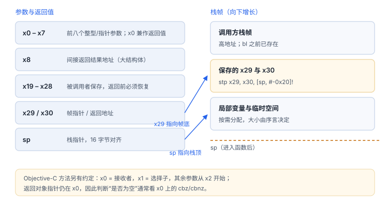
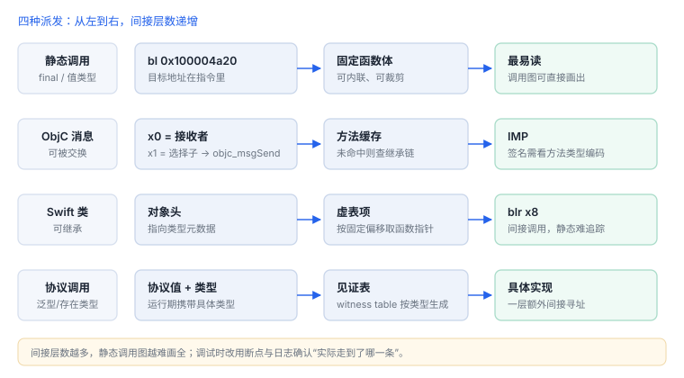

反汇编基础：ARM64 调用约定
先认识调用约定，再读指令，否则每条指令都像噪音
读反汇编不需要背指令集，需要三件事：参数放哪、返回值放哪、函数边界长什么样。掌握这三点，多数函数都能看懂主干。
1. 寄存器与调用约定（ARM64）
| 寄存器 | 作用 |
|---|---|
| x0–x7 | 前八个整型/指针参数；x0 同时是返回值 |
| x8 | 间接返回结果地址（如返回大结构体） |
| x9–x15 | 调用者保存的临时寄存器 |
| x19–x28 | 被调用者保存，函数必须在返回前恢复 |
| x29 / x30 | 帧指针 / 返回地址（链接寄存器） |
| sp | 栈指针，16 字节对齐 |
Objective-C 方法调用额外依赖约定：x0 是接收者，x1 是选择子，其余参数从 x2 开始。
2. 高频指令
| 指令 | 含义 | 阅读提示 |
|---|---|---|
stp / ldp | 成对存取 | 序言与尾声的典型形态 |
adrp + add | 取页地址再加偏移 | 常用来构造字符串/全局变量地址 |
bl | 带返回的调用 | 目标符号就是被调函数 |
blr / br | 间接调用/跳转 | 虚表、函数指针、消息派发之后 |
cbz / cbnz | 为零/非零跳转 | 空值判断、错误码判断 |
cmp + b.cond | 比较后条件跳转 | 业务分支多半在这里 |
ret | 返回 | 函数结束标记 |
3. 函数边界
典型序言与尾声（示意）
stp x29, x30, [sp, #-0x20]! ; 保存帧指针与返回地址，开栈
mov x29, sp ; 建立帧
...
ldp x29, x30, [sp], #0x20 ; 恢复
ret看到这对指令，就找到了一个函数的最小边界；中间出现的 bl 是调用点，cbz/b.cond 是分支点。

4. 识别派发方式
| 形态 | 特征 | 说明 |
|---|---|---|
| Objective-C 消息 | x1 载入选择子后 bl _objc_msgSend | 可在运行时被交换 |
| Swift 类方法 | 从对象头部偏移取函数指针后 blr | 走类型元数据的虚表 |
| 协议调用 | 经见证表两次间接寻址 | 按具体类型解析 |
| 静态调用 | 直接 bl 到固定地址 | 可被内联，最易读 |

5. 一段带注释的片段（示意）
登录令牌请求的主干
0x100004a20 stp x29, x30, [sp, #-0x20]!
0x100004a24 mov x29, sp
0x100004a28 str x0, [sp, #0x10] ; 保存 self
0x100004a2c adrp x1, 12 ; 选择子所在页
0x100004a30 add x1, x1, #0x3a0 ; "requestToken:"
0x100004a34 bl 0x100006000 ; objc_msgSend
0x100004a38 cbz x0, 0x100004a50 ; 返回 nil → 失败分支
0x100004a3c ldp x29, x30, [sp], #0x20
0x100004a40 ret
0x100004a50 mov x0, #0
0x100004a54 b 0x100004a3c读法：先看参数与返回值（x0/x1），再看分支（cbz），最后看调用（bl）。地址与偏移因构建而异，这里只演示形态。
6. 阅读顺序建议
- 从字符串或日志线索找到交叉引用，定位到函数。
- 看序言确定边界，看返回值确定成功/失败路径。
- 看分支条件，判断业务规则。
- 看调用关系，画出主干；细节函数按需展开。
先看返回值与分支
逐条翻译指令效率最低；先确认
逐条翻译指令效率最低；先确认
x0 的去向与 cbz/b.cond 的条件，主干就出来了。延伸：08 hook 原理 · F02 跳板结构 · 12 一次完整分析
7. 数据细节：分支指令能跳多远
| 指令 | 范围 | 编码要点 |
|---|---|---|
B / BL | ±128 MB | 26 位立即数，按 4 字节对齐 |
CBZ / CBNZ | ±1 MB | 19 位立即数，条件分支 |
TBZ / TBNZ | ±32 KB | 14 位立即数，测位跳转 |
ADRP + ADD | ±4 GB 页范围 | 组合使用构造任意地址 |
反汇编里看到“跳得很远”的调用，通常是 ADRP 加偏移，而不是一条 BL；看到 BL 只说明目标在附近，不能推断是哪个函数。
8. 一次真实排查记录：反汇编与源码对不上
- 现象：源码里明明有一次函数调用，反汇编里却找不到
BL。 - 先怀疑内联：优化构建把短函数内联，调用变成了几条指令。
- 再看尾部调用：有的调用被优化成
B（尾调用），不会回到原处。 - 验证：在源码调用点下断点，看是否停在目标函数的入口。
- 结论与限制：记录“调用被内联或尾调用优化”，并注明结论只对该构建的优化级别成立。
9. 自测
- ARM64 下 Objective-C 方法的接收者与选择子分别放在哪个寄存器？
- 如何仅凭指令形态判断一个调用是静态调用还是消息发送？
- 为什么读反汇编要先找返回值与分支，而不是逐条翻译指令？